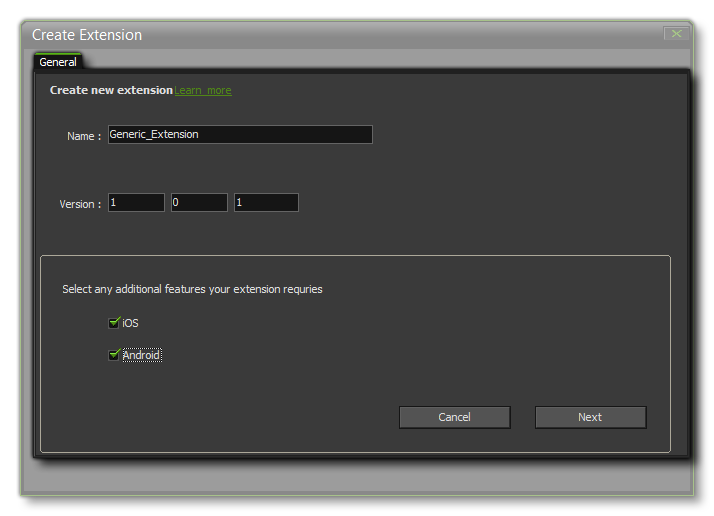
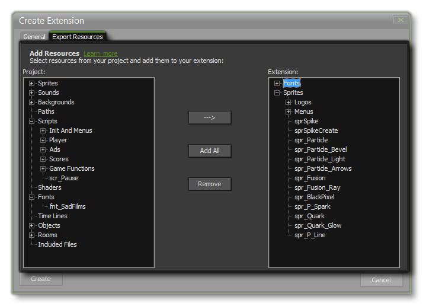
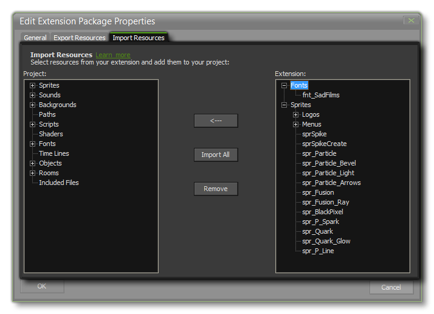
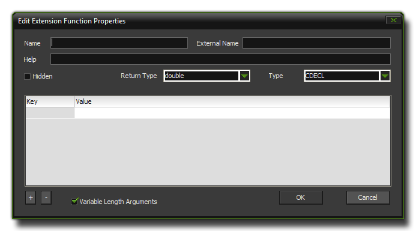

Creating Extensions
This section details how to create an extension
in GameMaker: Studio.
To create an extension (no matter what format file you are
using) you must first start by right clicking on the Extension
resource in the resource tree and selecting Create Extension
which will open the following window:  This window is where you place the
basic information that is required to create the GMEZ extension
package. You can give it a name and a version number, and also
supply a Package ID. If you only wish to use the extension
in this one project you can leave the package ID blank, but if you
want to export the extension as a GMEZ file, or if you want to
upload it to Markeplace, then you will need to give this
information too. The Package ID should be unique to this extension
and be in reverse URL format
com.<company>.<extension_name>. If your
extension package is for iOS or for Android, then you should mark
the appropriate check boxes in this window too.
When you are happy that the information is correct you should click
the "Next" button to continue. If you have not chosen iOS or
Android as part of the extension, your next step will be to flag
any of the project resources as being part of this new extension in
the following tab:  You can select resources to add
into the extension package from the left side of the window, and
clicking the "---->" button will add them to the resource
list on the right. You can select individual assets, or you can
select a group folder from the resources and add that (adding
everything it contains). If your GMEZ is to be a template or a
framework, you can click the "Add All" button to add
everything in the current project to the extension. If you make a
mistake, select the resource or group folder and press
"Remove".
Once everything is correct you can click Create and your new
extension package will be made. You can still edit the package by
double clicking on it, or by right-clicking and selecting the
Properties option. This will enable you to edit the
extension package properties. If the extension contains resources,
you will also see that there is an extra tab available to you for
Importing those resources into the current project:  As with exporting
resources to an extension, tis tab has various buttons for adding
the package resources to your project. the available resources are
shown on the right, while the current project resources are shown
on the left. Clicking the <--- button will add the
selected resource, or folder of resources, to the project resource
tree, or you can click Import All to add everything from the
package. If you make a mistake while adding resources, you can
select them from the resource tree on the left and click
Remove to remove them again.
Android and iOS
When you create your extension package for iOS or Android, there
are a couple of extra steps required by you to create the final
extension package. These are detailed in the following pages of the
manual:
- iOS Extensions
- Android Extensions
Adding Files
Once your basic extension package has been created, you can then
go ahead and add files, functions and constants to make it work.
This is done by right clicking on the extension and selecting
Add File. The choice of file greatly influences how
GameMaker: Studio will use the extension as different file
types are required for the different target platforms that can be
used when you compile your game, and not all platforms require a
"real" file either (in which case you would use the Add
Placeholder option instead of Add File). The relevant
files needed per target are listed below:
- GML: This is an extension made only with the GameMaker
Language and is compatible with all platforms.
- .js: This is a JavaScript extension and is only
compatible with the JS target modules (HTML5).
- .dll: This a dynamic-link library extension and is only
compatible with the Windows and Xbox One targets (each target will
need a different *.dll file compatible with its
specifications).
- .so: This is the Linux equivalent of a DLL and is only
compatible with the Ubuntu (Linux) target.
- .prx: This is a file for adding functionality to the PS3
and PS4 targets (each target will need a different *.prx file
compatible with its specifications).
- .suprx: This is for adding functionality to the PSVita
target.
- .dylib: This is the Mac equivalent of a DLL and is only
compatible with Mac target (not iOS).
- placeholder: This is a file that can be of any type,
except those given above and .gmez, and will not be used
except as a "linker" file to connect a set of functions or
constants with the given extension (generally only for use with iOS
and Android extensions).
If the extension package is for iOS or Android platforms, you
will also see some extra options for adding files to the package.
These are explained in the pages linked to above for those
platforms.
File Properties
As you can see, not all extensions are compatible with all
target platforms, so you should first open up the extensions
resource tree and select for each of the installed extensions a
target from their Extension File Properties. This can be
achieved by double clicking on the extension file (NOT the
package itself), or by right clicking and selecting "Extension
Properties" from the pop up menu. Either action will open up the
following window:  In this window you can re-name the
file that is to be used as the extension (this file is then saved
with the gmx project and any changes should be made in the project
file, and not to the original) and you can define the
Init Function and the Final Function. These functions
are the ones that the included file or the source file (which will
depend on the target platform) needs to have called to set them up
for use with GameMaker: Studio and to free them again when
the game closes. They are called automatically, with no arguments,
and you should note that these are not always necessary so you
should check the documentation for the file you wish to use as an
extension first to see if these functions are necessary or can be
left blank (if in doubt, leave them blank).
In this window you can re-name the
file that is to be used as the extension (this file is then saved
with the gmx project and any changes should be made in the project
file, and not to the original) and you can define the
Init Function and the Final Function. These functions
are the ones that the included file or the source file (which will
depend on the target platform) needs to have called to set them up
for use with GameMaker: Studio and to free them again when
the game closes. They are called automatically, with no arguments,
and you should note that these are not always necessary so you
should check the documentation for the file you wish to use as an
extension first to see if these functions are necessary or can be
left blank (if in doubt, leave them blank).
If you are developing for multiple platforms and wish the same
extension to be used on all of them, you can create Proxy
Files for each target and add them to your extension too.
Simply place the proxy file in the same folder as the extension
(you can find this by right-clicking on the extension and
selecting "Open in Explorer". Note that the naming of these files
is very important and you can find a full list of the
available platforms and conventions from the following page:
- Proxy Files
The final section is labelled Copies To. Here you can see
a list of target platforms which you can tick (or un-tick) as
appropriate for your extension. In this way, you can have (for
example) two hi-score extensions, one *.dll and one *.js that have
the same functionality but work for different target platforms. You
would tick ONLY the Windows check-box for the *.dll and ONLY the
HTML5 check-box for the *.js and then GameMaker will know to
use only the appropriate one for the target platform. You can
also set up different configurations and tick/un-tick
options as necessary depending on the current configuration chosen
(for more information see Advanced Use: Configurations).
Note that adding proxy files will automatically tick the
appropriate target platform.
Adding Functions and Constants
Now you have added the necessary files to the extension, it is
time for you to add the functions and constants that you wish the
extension to use. This is done by right-clicking on the file and
selecting either Add Function or Add Constant. For a
constant, it is simply a case of giving it a name (only letters
from A-Z, numbers and the under-bar "_" symbol are permitted, and
the name must not start with a number) and a value and then
clicking on the "Okay" button. If you choose to add a function,
then the following window will open:  The different options presented here are:
- Name - This is the GML name of the function (only
letters from A-Z, numbers and the under-bar "_" symbol are
permitted, and the name must not start with a number).
- External Name - Here you must put the name of the
original function as it is recognised by the extension, even if the
Name is the same.
- Help - This is the text that will appear at the bottom
of the script editor and should be a correct form of the function
syntax with the format function(argument0,argument1).
- Return Type - What the function returns. This can be
either a string (text) or a double (real number).
- Type (dll only) - The calling convention used to call
the function.
- Arguments - Here you can list all the arguments that
your function can take as well as the type (string or double). This
is limited to a maximum of sixteen arguments, and note that for
functions with 4 or more arguments, all of them must be of
type double.
Once you have defined all your constants and functions, the
extension is almost ready to be used and distributed as a
*.gmez. To create a *.gmez, simply right-click on
the extension name and select Export, which will open a save
dialogue where you can say where to save the final *.gmez
file to. Once this is done you can then use the same GMEZ file in
other projects, or distribute it for others to use.
NOTE: A saved *.gmez does not
save the configuration options, and those will have to be set
whenever you load a created gmez into a new project.
Additional Documentation
You can find additional documentation on extension packages from
the YoYo Games Knowledge Base:
- Extensions
You can also find additional information about the GameMaker:
Studio Marketplace from the following section of the
Knowledge Base:
- Marketplace FAQs
© Copyright YoYo Games Ltd. 2018 All Rights Reserved